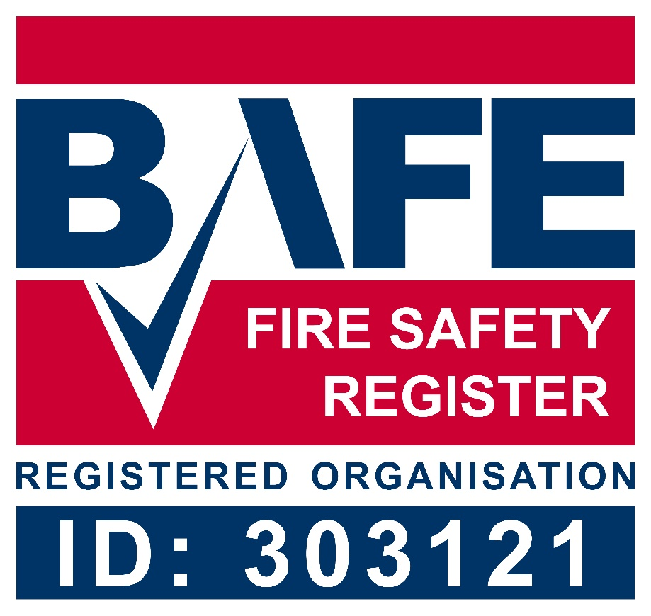
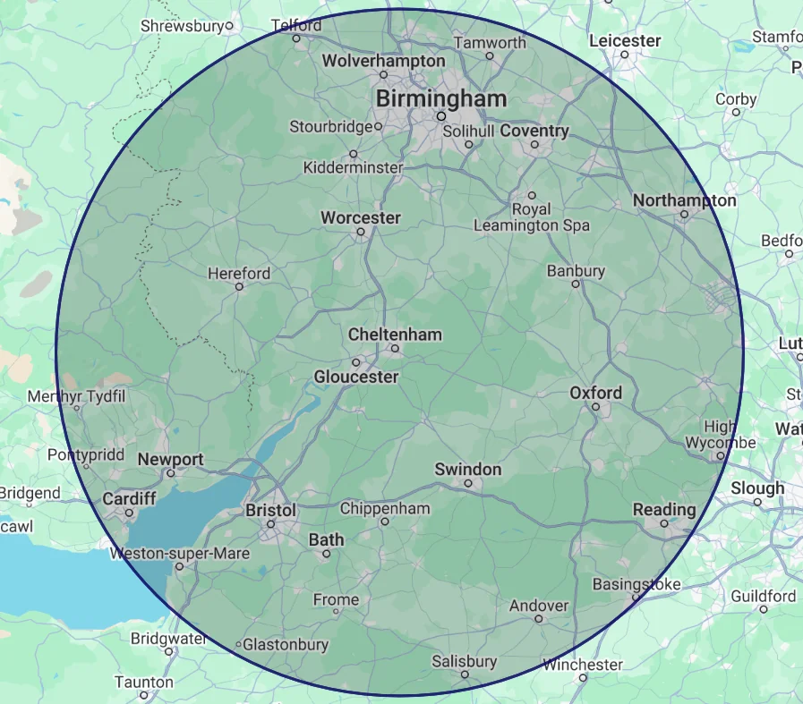

Independent fire risk assessment you can rely on
BAFE SP205 certified, family-run assessors covering Cheltenham, Bath, the South West and West Midlands. Specialists in heritage, high-rise and complex premises, with clear, proportionate advice and no upselling.
Accreditations
Third-party certified, not just self-declared
We are certified by BAFE through SSAIB, so every assessment is carried out under the rigorous standards of the BAFE SP205 scheme and we are associates of the Institute of Fire Safety Managers. Independent accreditation means our competence is audited, giving you, your insurer and the fire service complete confidence in our reports.

What we do
Fire risk assessments for every premises type
From historic listed buildings to complex construction sites, clear, practical recommendations proportionate to your building and budget.
Listed & Heritage Buildings
Proportionate assessments that respect the fabric, character and significance of historic properties across the Cotswolds and Bath.
Learn more → 🏢High-Rise Residential
Regulation-led assessments for high-rise blocks, aligned with the Building Safety Act and Fire Safety (England) Regulations.
Learn more → 🏠Domestic Premises & HMO
Assessments for HMOs, blocks of flats and domestic premises that satisfy licensing requirements and keep tenants safe.
Learn more → 🛏Holiday Accommodation
FRAs for holiday lets and short-stay accommodation, legally required since 2023, handled without disruption to bookings.
Learn more → 🏗Construction & Pre-Occupation
Construction site assessments and pre-occupation FRAs for developers handing over new and converted buildings.
Learn more → 🚪Consultancy, Fire Doors & More
Fire safety consultancy, fire door surveys and capacity calculations for every stage of a building's life.
All other services →How it works
From enquiry to report, in four steps
Tell us about your building
Call, WhatsApp or use our quote form. We'll confirm scope and a fixed price, usually the same day.
Site visit
A qualified assessor visits at a time that suits you and walks the whole premises, inside and out.
Clear, prioritised report
A plain-English report with photographs and an action plan ranked by risk, not a tick-box exercise.
Ongoing support
We talk you through the findings and stay available while you action them. No upselling, ever.
Our specialism
Heritage and listed building specialists
Working across the Cotswolds and Bath, we have extensive experience with private country estates, period flat conversions, listed wedding venues and historic churches.
- Proportionate advice that respects historic fabric and character
- Practical compliance without unnecessary alteration
- Experience with conservation officers and listed building constraints
Who you'll deal with
A family-run, female-led team
A family team with a combined eight years in fire safety. When you call Foley Fire, you speak to the people who do the work.
Molly
L4CertFRA · TIFSM
Specialises in listed buildings, blocks of flats and holiday accommodation, with a background in fire restoration.
Becky
NFRAR (Advanced) · TFRAR · MIFSM
Founder. Specialises in complex sites and all stages of construction.

Errol
Chief Morale Officer
Resident office hoover and all-around entertainer. A firm believer in work-life balance and well-earned belly rubs.
What clients say
Rated 5.0 by the people we work with
"Excellent communications and very prompt with both the actual assessment and the completion/supply of a written report and certificate."William HWedding venue, Cotswolds
"I highly recommend Foley Fire. Our FRA was carried out in a very professional manner and the resulting report was detailed and thorough."Abbey WBlock management, Cheltenham
"Good recommendations and adjustments for a small business. A very competitive price. Highly recommend."Bridget SHoliday let owner, Bristol
Where we work
Based in Cheltenham, covering the South West & West Midlands
We carry out assessments across Gloucestershire, Oxfordshire, Warwickshire, Wiltshire and the West Midlands, including:
- Cheltenham
- Gloucester
- Bristol
- Bath
- Birmingham
- Oxford
- Swindon
- Worcester
- Stroud
- Cirencester
- Tewkesbury
- Evesham

Need a fire risk assessment?
Tell us about your building and we'll come back with a fixed quote, usually the same day.
Request a quote 01242 379069